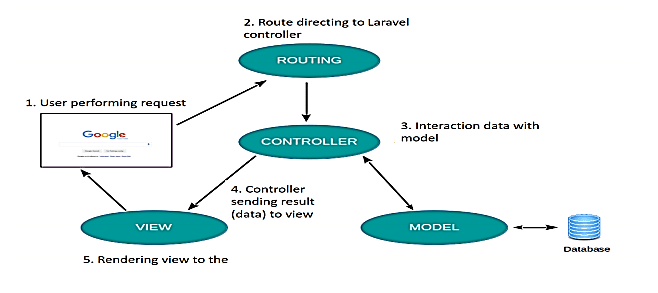

Rutas
En una aplicación PHP tradicional, la URL que visitas suele corresponderse directamente con un fichero físico en el servidor. Por ejemplo, para ver la página de contacto, visitarías tusitio.com/contacto.php. Este enfoque es simple, pero muy rígido: si quieres cambiar el nombre del fichero, rompes la URL.

Laravel adopta un enfoque mucho más potente y flexible a través de su sistema de enrutamiento (routing). El enrutador es el componente que intercepta todas las peticiones que llegan a la aplicación y, basándose en la URL y el método HTTP (GET, POST, etc.), decide qué bloque de código debe ejecutarse para gestionar esa petición. Esto desacopla por completo la URL de la estructura de ficheros, permitiéndonos crear URLs limpias y amigables (p. ej., /contacto) que son manejadas por la lógica que nosotros definamos.
Todas las rutas para nuestra aplicación web se definen en un único fichero: routes/web.php. Al abrirlo, verás que puedes empezar a definir los "puntos de entrada" de tu aplicación usando una sintaxis muy expresiva y legible. Por ejemplo, una ruta básica se ve así:
<?php
use Illuminate\Support\Facades\Route;
Route::get('/saludo', function () {
return '¡Hola desde Laravel!';
});
?>
Esta simple definición le dice a Laravel: "Cuando un usuario haga una petición GET a la URL /saludo, ejecuta esta función y devuelve el resultado".
En este apartado, exploraremos cómo definir diferentes tipos de rutas, cómo pasarles parámetros y, lo más importante, cómo conectarlas a los Controladores para empezar a construir la lógica de nuestra aplicación.
Verbos HTTP
Cuando definimos una ruta en Laravel, no solo especificamos una URL, sino que también la asociamos a un verbo o método HTTP. Esto es fundamental, ya que la combinación de la URL y el verbo define una acción única. Una petición GET a /articulos es completamente diferente a una petición POST a la misma URL. El verbo HTTP comunica la intención de la petición: ¿el cliente quiere leer, crear, actualizar o borrar información?
Este enfoque, basado en la utilización de los verbos HTTP para definir acciones sobre recursos, es la base de la arquitectura REST (Representational State Transfer), el estándar de facto para la construcción de APIs y aplicaciones web modernas. Laravel facilita enormemente la creación de rutas que siguen estos principios.
Aunque existen varios verbos HTTP, en el desarrollo de aplicaciones web nos centraremos en los cinco que se corresponden con las operaciones CRUD (Crear, Leer, Actualizar y Borrar).
En una aplicación web, las interacciones con un recurso, como un artículo de un blog, siguen un ciclo de vida completo que es gestionado por los verbos HTTP. El punto de partida más común es la lectura, que se realiza con el verbo GET. Este se utiliza para solicitar información sin alterarla, como al mostrar una lista de artículos con Route::get('/articulos', ...) o el detalle de uno en concreto con Route::get('/articulos/{id}', ...).
Si un usuario desea añadir un nuevo recurso, la acción de creación se gestiona a través del verbo POST. Típicamente, esto corresponde al envío de un formulario que guarda el nuevo artículo en la base de datos, lo que se define con una ruta como Route::post('/articulos', ...). Una vez que el artículo existe, su actualización se realiza mediante los verbos PUT o PATCH. Aquí nos encontramos con una limitación de los navegadores, ya que los formularios HTML solo soportan GET y POST. Laravel resuelve esto de forma elegante permitiendo "simular" la intención de actualizar mediante una directiva como @method('PUT') dentro del formulario, que el enrutador asocia a una ruta definida con Route::put(...).
Finalmente, para la eliminación de un recurso se utiliza el verbo DELETE, definido con Route::delete('/articulos/{id}', ...) y, por las mismas limitaciones del HTML, a menudo invocado también desde un formulario que simula el método. De esta forma, cada verbo HTTP se mapea a una operación CRUD específica (Leer, Crear, Actualizar y Borrar), creando una aplicación estructurada y predecible.
El principio de Idempotencia
Un principio clave en el diseño de aplicaciones web robustas es la idempotencia, que establece que realizar una misma petición varias veces debe tener exactamente el mismo efecto en el estado del servidor que realizarla una sola vez. Los verbos GET, PUT y DELETE son idempotentes; pedir los datos de un artículo (GET) cien veces no lo altera, actualizar su título a "Nuevo Título" (PUT) repetidamente solo resulta en que el título se mantiene así, y borrar un artículo (DELETE) la segunda vez simplemente confirma que ya no existe, sin causar un nuevo cambio.
Por el contrario, el verbo POST no es idempotente, ya que cada petición está diseñada para crear un nuevo recurso; enviar la misma petición POST cien veces resultaría en la creación de cien artículos nuevos. Entender este principio es crucial para construir sistemas fiables, ya que nos permite saber qué peticiones se pueden reintentar de forma segura en caso de un error de red sin causar efectos secundarios no deseados.
Aunque a veces se agrupa con PUT, el método PATCH no es idempotente por naturaleza. La razón es que PATCH aplica una modificación parcial o relativa al estado actual del recurso. El ejemplo más claro es una operación para incrementar un contador. Imagina una petición PATCH que dice: {"operacion": "incrementar", "campo": "likes", "valor": 1}, la primera vez que la envías, el contador de "likes" pasa, por ejemplo, de 10 a 11. Si envías exactamente la misma petición por segunda vez, el contador pasará de 11 a 12.
Como el estado final del recurso es diferente después de cada petición idéntica, la operación no es idempotente. PUT, en cambio, es idempotente porque define el estado completo del recurso. Una petición PUT diría: {"likes": 11}. No importa cuántas veces la envíes, el valor de "likes" siempre terminará siendo 11.
Tabla resumen
La siguiente tabla muestra un resumen de los verbos HTTP y de si son o no idempotentes:
| Verbo HTTP | Descripción / Funcionalidad | Idempotente |
|---|---|---|
| GET | Obtiene un recurso del servidor. No modifica datos, solo los lee. | ✅ Sí |
| POST | Envía datos al servidor para crear un nuevo recurso. | ❌ No |
| PUT | Reemplaza completamente un recurso existente con los datos enviados. | ✅ Sí |
| PATCH | Modifica parcialmente un recurso existente. | ❌ No |
| DELETE | Elimina un recurso en el servidor. | ✅ Sí |
| HEAD | Igual que GET pero solo obtiene los encabezados de la respuesta, sin el cuerpo. | ✅ Sí |
| OPTIONS | Devuelve las opciones de comunicación disponibles para un recurso (métodos soportados, etc.) | ✅ Sí |
Rutas Básicas y Verbos HTTP
Una vez vito los verbos HTTP, veamos como definir nuestras rutas en Laravel en base a estos verbos. Como ya hemos comentado, todas las rutas de una aplicación web Laravel se definen, por defecto, en el fichero routes/web.php. El enrutador de Laravel se encarga de dirigir cada petición entrante a la definición de ruta que le corresponda. Veamos cómo se construyen estas definiciones.
Definición de una Ruta Simple con Route::get() y una Closure
La forma más básica de definir una ruta es utilizando el facade Route, seguido del método del verbo HTTP al que responderá (p. ej., get), y dos argumentos:
- La URI: La ruta en la URL que activará esta definición (p. ej.,
/contacto). - La Acción: El código que se ejecutará cuando se visite la URI. La forma más simple de definir una acción es mediante una
Closure(una función anónima).
Lo que la Closure devuelve (return) será el contenido de la respuesta HTTP que se enviará al navegador.
<?php
// En routes/web.php
use Illuminate\Support\Facades\Route;
// Cuando un usuario visita la URL raíz ('/') con el método GET,
// se ejecuta la función anónima y se devuelve el string.
Route::get('/', function () {
return '¡Bienvenido a la página de inicio!';
});
// Cuando un usuario visita '/acerca-de' con el método GET...
Route::get('/acerca-de', function () {
return 'Esta es la página de información sobre nosotros.';
});
?>
Respuesta a Diferentes Verbos HTTP
El enrutador de Laravel proporciona métodos para cada uno de los verbos HTTP principales, permitiéndonos crear aplicaciones que siguen los principios RESTful de forma intuitiva. Cada método corresponde a una operación CRUD:
-
Route::post()responde a peticiones POST. Se utiliza para manejar el envío de formularios que crean un nuevo recurso. -
Route::put()yRoute::patch()(Actualizar): Responden a peticiones PUT y PATCH, respectivamente. Se usan para actualizar un recurso existente. -
Route::delete()(Borrar): Responde a peticiones DELETE para eliminar un recurso.
Adicionalmente a los métodos dedicados para cada verbo (get, post, etc.), Laravel proporciona dos métodos auxiliares para manejar rutas que deben responder a múltiples tipos de peticiones HTTP.
El método Route::match te permite registrar una única ruta que responda a un conjunto específico y limitado de verbos HTTP. Esto es particularmente útil para simplificar el fichero de rutas en casos donde una misma URL gestiona diferentes acciones.
El caso de uso más común es un formulario que se muestra y se procesa en la misma URL. Con el método GET, la ruta mostraría el formulario vacío. Con el método POST, la misma ruta procesaría los datos enviados por ese formulario.
<?php
use App\Http\Controllers\ContactoController;
// Esta única definición de ruta manejará tanto la petición GET para mostrar el formulario
// como la petición POST para procesarlo.
Route::match(['get', 'post'], '/contacto', [ContactoController::class, 'handleFormulario']);
?>
Dentro del ContactoController, el método handleFormulario tendría que comprobar qué tipo de petición ha recibido para saber si debe mostrar la vista o procesar los datos:
<?php
// En app/Http/Controllers/ContactoController.php
public function handleFormulario(Request $request)
{
if ($request->isMethod('post')) {
// Lógica para validar y procesar el formulario...
}
// Por defecto (si es GET), muestra la vista del formulario.
return view('contacto');
}?
?>
Otro método interesante es Route::any, que es el más abierto de todos: registra una ruta que responderá a todos los verbos HTTP (GET, POST, PUT, PATCH, DELETE, etc.).
Su uso es menos frecuente y debe manejarse con cuidado. Generalmente se reserva para situaciones muy específicas, como la creación de un "proxy" donde una ruta de Laravel simplemente captura una petición y la reenvía a otro servicio sin importar el método.
Parámetros de Ruta
No todas las URLs de una aplicación son estáticas como /contacto o /acerca-de. A menudo, necesitamos rutas que representen un recurso variable, como el perfil de un usuario específico (/usuarios/1) o un artículo de blog (/articulos/mi-primer-articulo). Los parámetros de ruta nos permiten definir estas rutas dinámicas.
Un parámetro se define en la URI de la ruta envolviendo un nombre entre llaves {}. El valor de ese segmento en la URL del navegador será capturado y pasado a nuestra Closure o método del Controlador.
El tipo de parámetro más común son los parámetros obligatorios. La ruta no será reconocida a menos que este segmento esté presente en la URL. El nombre del parámetro dentro de las llaves debe coincidir con el nombre de la variable en la firma de la función.
<?php
// En routes/web.php
// Definimos una ruta que espera un parámetro 'id'
Route::get('/articulos/{id}', function ($id) {
return "Mostrando el artículo con el ID: " . $id;
});
// Definimos una ruta con múltiples parámetros
Route::get('/articulos/{categoria}/{slug}', function ($categoria, $slug) {
return "Mostrando el artículo '$slug' en la categoría '$categoria'.";
});
?>
Ahora, si por ejemplo visitas /articulos/123, la primera ruta se activará y verás: "Mostrando el artículo con el ID: 123", pero si visitas /articulos/tutoriales/instalar-laravel, la segunda ruta se activará.
Parámetros Opcionales
A veces, un parámetro no es estrictamente necesario. Podemos marcar un parámetro como opcional añadiendo una interrogación ? después de su nombre. Para que esto funcione, debemos proporcionar un valor por defecto para la variable correspondiente en la firma de la función.
<?php
// El parámetro {nombre} es opcional
Route::get('/saludar/{nombre?}', function ($nombre = 'Invitado') {
return "¡Hola, " . $nombre . "!";
});
?>
En el caso de que visites /saludar/Ana, verás: "¡Hola, Ana!", pero si no introduces ningún nombre al visitarla, se usará el valor por defecto y verás: "¡Hola, Invitado!".
Restricciones de Parámetros con Expresiones Regulares
Podemos forzar que un parámetro de ruta cumpla un formato específico utilizando el método where(), que acepta el nombre del parámetro y una expresión regular. Si el parámetro en la URL no cumple con la expresión regular, la ruta no se activará y Laravel devolverá un error 404 (No Encontrado).
Esto es extremadamente útil para la validación y para evitar ambigüedades entre rutas.
<?php
// Esta ruta solo se activará si el {id} es un número.
Route::get('/articulos/{id}', function ($id) {
// ...
})->where('id', '[0-9]+');
// Esta ruta solo se activará si el {nombre} contiene solo letras.
Route::get('/usuarios/{nombre}', function ($nombre) {
// ...
})->where('name', '[a-zA-Z]+');
// Podemos encadenar múltiples restricciones.
Route::get('/productos/{id}/{slug}', function ($id, $slug) {
// ...
})->where('id', '[0-9]+')->where('slug', '[a-z0-9-]+');
?>
Para patrones que se repiten a menudo, como el de id, Laravel permite definir "patrones globales" en el fichero App/Providers/RouteServiceProvider.php para no tener que escribirlos en cada ruta.
El Cuerpo de la Petición (Request Body)
Cuando un cliente (como un navegador) se comunica con un servidor, lo hace a través de una petición HTTP. Esta petición tiene varias partes: la línea de inicio (que incluye el método y la URL), las cabeceras (que contienen metadatos) y, opcionalmente, un cuerpo (body).
El cuerpo de la petición es el espacio donde el cliente envía los datos principales o la "carga útil" (payload) al servidor. Mientras que la URL le dice al servidor qué recurso se quiere afectar, el cuerpo le dice con qué datos. Es importante destacar que no todas las peticiones tienen cuerpo. Las peticiones GET, diseñadas para solicitar datos, no lo tienen. El cuerpo es utilizado por los verbos que envían información para modificar el estado del servidor, principalmente POST, PUT y PATCH.
Formatos Comunes del Body y la Cabecera Content-Type
El servidor necesita saber en qué formato vienen los datos del cuerpo para poder interpretarlos correctamente. Esta información se la proporciona la cabecera HTTP Content-Type. Los formatos más comunes en el desarrollo web son:
-
application/x-www-form-urlencoded: Este es el formato por defecto para los formularios HTML simples. Los datos se envían como una cadena de paresclave=valorseparados por&(p. ej.,nombre=Ana&edad=30). PHP procesa automáticamente esta cadena y pone los datos a nuestra disposición en la superglobal$_POST. -
multipart/form-data: Este formato se usa obligatoriamente cuando un formulario incluye la subida de ficheros (<input type="file">). El cuerpo de la petición se divide en múltiples partes, cada una con sus propias cabeceras, permitiendo enviar datos de texto y datos binarios de ficheros en la misma petición. PHP procesa este formato y separa los datos de texto en$_POSTy los datos de los ficheros en$_FILES. -
application/json: Es el estándar para las APIs modernas. El cuerpo de la petición contiene simplemente una cadena de texto en formato JSON (p. ej.,{"nombre":"Ana", "edad":30}). Es importante saber que PHP no procesa automáticamente este formato. En PHP "vainilla", para leer un cuerpo JSON, tendrías que acceder al flujo de entrada (php://input) y decodificarlo manualmente:$datos = json_decode(file_get_contents('php://input'), true);.
El Acceso Simplificado en Laravel
Una de las grandes ventajas de usar un framework como Laravel es que abstrae estas diferencias. El objeto Request de Laravel analiza la cabecera Content-Type y procesa el cuerpo de la petición por nosotros, sin importar el formato.
Ya sea que los datos lleguen como x-www-form-urlencoded o como application/json, podemos acceder a ellos de la misma manera y con una sola función:
<?php
// En un método de un Controlador
public function store(Request $request)
{
// Da igual si el cliente envió un formulario o un JSON,
// Laravel nos da el valor de 'nombre' de forma unificada.
$nombre = $request->input('nombre');
// ...
}
?>
Esta abstracción hace que la construcción de APIs sea tan sencilla como la gestión de formularios web tradicionales.